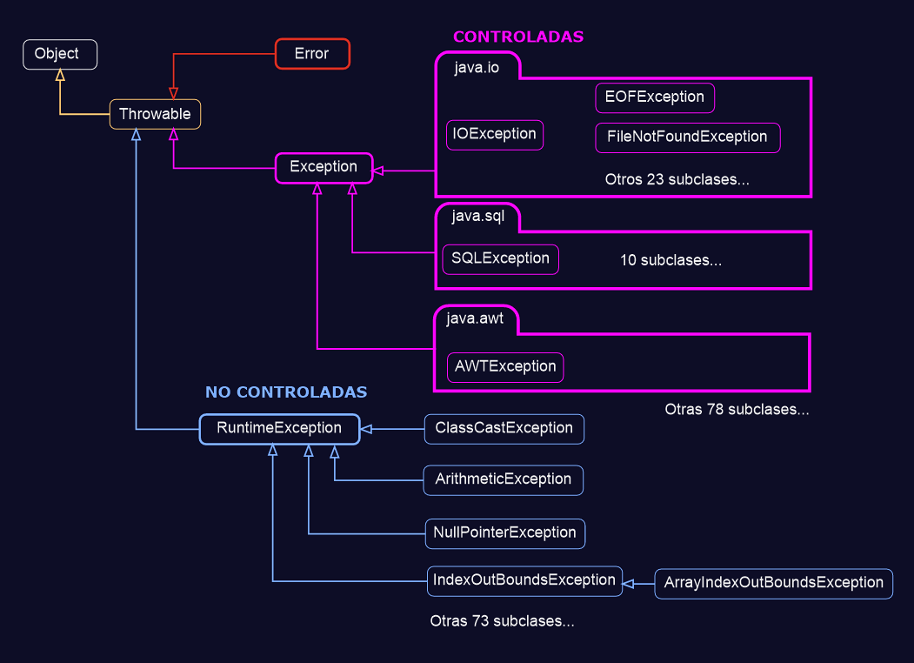

Aunque todavía no hemos visto nada de POO, es necesario explicar este apartado para solucionar algunos problemas que podemos tener cuando el usuario introduce datos no permitidos, ya que hemos empezado a ver contenido donde se pueden producir errores que hagan que nuestro programa finalice y no entendamos por qué.
En Java nos podemos encontrar errores sintácticos que son posibles de solucionar gracias al compilador al mostrarlo visualmente como, por ejemplo, olvidarnos de un punto y coma o cerrar mal algún bloque de código. A estos errores se les denomina Errores de compilación.
A lo largo de los apartados hemos visto alguno de ellos cuando nuestro IDE nos lo marcaba en rojo, como cuando queríamos declarar una variable dos veces o intentábamos acceder a una variable de ámbito local desde fuera de su método.
En este ejemplo se nos ha olvidado las comillas dobles, por lo que en este caso, se está interpretando que estamos usando dos variables sin declarar en vez de usar un string.
Cuando tenemos este tipo de errores no nos dejará compilar, por lo que tendremos que solucionarlos si queremos ejecutar nuestro programa.
Pero no siempre nos encontraremos con errores de compilación, sino que podrá haber errores que el IDE no detecte y éstos se originen cuando estén en ejecución y, en una determinada parte, se produzca un error que impida continuar parándose y saliendo abruptamente.
Cuando en consola o en terminal nos muestra un mensaje con la palabra error, éste no será ocasionado por la lógica del programa, más bien será por problemas graves en el sistema como errores en memoria o desbordamiento en la pila de ejecución. En estos casos no podremos hacer mucho, ya que escapan a nuestro alcance al derivar de problemas del sistema o del hardware donde se ejecuta el programa.
Por otro lado, si aparece un mensaje de excepción, es nuestro deber el controlarlo para que no termine el programa y siga el flujo normal.
Las excepciones se producen en tiempo de ejecución y dentro de éstas, tenemos dos tipos: las excepciones controladas y las excepciones no controladas.
Las excepciones controladas, como bien indica su nombre, deben ser controladas. Éstas se producen por factores externos a nuestro programa, como por ejemplo intentar abrir un fichero que no está en la ruta indicada, o intentar insertar datos en una base de datos que no se encuentra operativa en ese momento.
Con estas excepciones no estamos obligados a capturarlas ya que se pueden solucionar mediante la lógica de programación.
Toda clase en Java deriva de la clase Object, y toda clase de excepción o error a su vez, deriva de la clase Throwable.
Solo las instancias de esta clase (o de sus subclases) pueden ser lanzados por la JVM o manualmente con la sentencia throw.
No será necesario aprenderse todas las clases de excepciones que existen por suerte, y más cuando podremos consultar la API (documentación oficial de Java) cuando la necesitemos.
Cuando el método no es el que maneja la excepción por sí mismo. Ésto lo que hace es propagar la excepción hasta llegar al método que lo invoque.
Desde este bloque se consigue decirle al programa cómo tiene que actuar en caso de que se produzca esta excepción.
En el bloque try, se introducirá aquel código que queremos ejecutar de manera normal pero que podría haber partes del código que produzcan la excepción.
En el bloque catch, se capturará la excepción que podría hacer que nuestro programa se detuviera y gracias a esto, conseguimos que, aunque se produzca el error nuestro programa se siga ejecutando.
Como cualquier clase, la excepciones tienen unas propiedades y unos métodos.
Por convención, Throwable y sus subclases tienen dos constructores, uno que no toma parámetros y otro con uno de tipos String que representa un mensaje detallado.
Las subclases que probablemente tengan una causa asociada deberían tener dos constructores más: uno que tome un Throwable (la causa) y otro que tome un String (el mensaje detallado) y un Throwable (la causa).
Permite imprimir el CallStack en la consola (sin argumentos) o en un recurso externo. Por ejemplo, un archivo de texto plano.
Cuando tenemos un programa que se está ejecutando en modo gráfico no se consigue ver el resultado. Pero normalmente se puede programar para que se genere un archivo de texto plano como txt para mostrar lo que ha ocurrido.